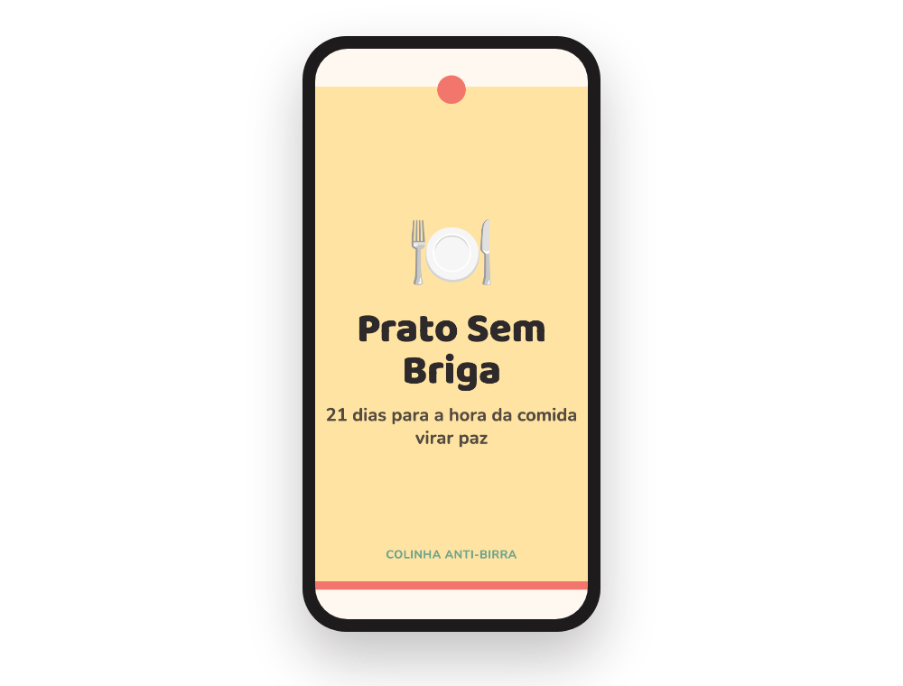

Espera! Sua Colinha já está garantida. Falta um passo para completar seu kit
A hora da comida é uma das birras que mais se repetem no dia. Este material leva o Freio Emprestado para a mesa.

Prato Sem Briga
21 dias, com passos curtos, para a hora da comida ficar mais leve para vocês dois.
- Plano de 21 dias com um passo curto por dia para a hora da refeição.
- Frases prontas para a mesa: quando ela recusa, joga a comida ou quer levantar.
- Rotina da refeição: o que fazer antes, durante e depois para diminuir a briga.
- Alimento novo sem briga: como apresentar sem forçar e sem chantagem.
- Sinais para procurar o pediatra: quando vale conversar com um profissional.
R$47
Pagamento único · Garantia de 7 dias
Se preferir não levar, toque em “Não, obrigada”. Sua Colinha continua garantida e o acesso chega no seu e-mail.
Não substitui a orientação do pediatra ou do nutricionista.